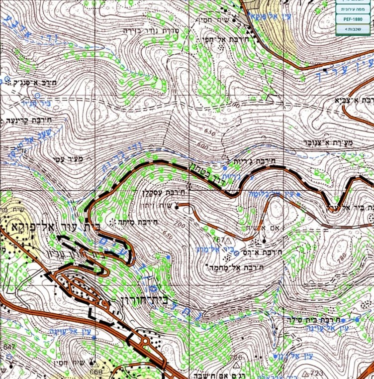
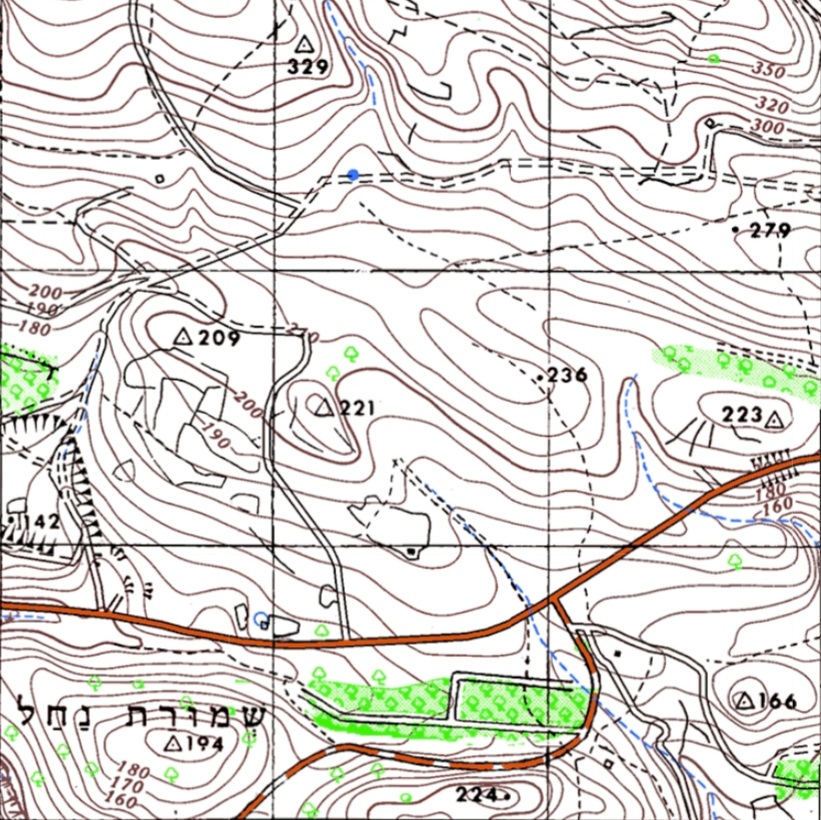

בתמונה מד קואורדינטות או בקיצור מדקו.
לחצו על המדקו לחשיפת המונחים
אלו כל החלקים במד הקואורדינטות אותם תלמדו בפרק זה.
≪
≫
רשת הקואורדינטות מחלקת את המפה למשבצות שוות. הרשת מורכבת מקווי אורך וקווי רוחב.
תלחצו על הנקודות בשביל לגלות.
כל משבצת במפה תצוין לפי קווי האורך והרוחב של הפינה השמאלית התחתונה של המשבצת בה היא נמצאת.
רב המפות הטופוגרפיות הן בקנה מידה של 1:50,000 כלומר כל ס"מ במפה מייצג 50,000 ס"מ (500 מ') בשטח וכל משבצת היא בגודל 2 ס"מ.
| 1 ק"מ | |||
| 1 ק"מ | |||
מפה תמיד תהיה מוצפנת, הטקסט שעל גבי המפה ומספרי הקואורדינטות מיושרים לפי הצפון.
התבליט מתאר את השטח בתלת-ממד באמצעות קווים (קווי גובה) ונועד לזהות את צורות השטח במפה.
| גובה מוחלט | גובה יחסי | נקודות גובה | נקודות טריג |
גובה מוחלט נמדד מעל לפני הים (הים הוא נקודת האפס).
בדוגמא הגובה המוחלט של נקודה A הוא 120 מ'.
קבוצת הסימנים המייצגת את כל פרטי הנוף(יישובים, צמחייה, כבישים, בתי כנסת ועוד) נקראת
תכסית.
בתחתית המפה יש מקרא מפה לסימנים אלו.
| חום | כחול | שחור | ירוק |
סימנים בצבע חום שייכים בדרך כלל לקרקע, תבליט וצירים.
בתמונה מד קואורדינטות או בקיצור מדקו.
לחצו על המדקו לחשיפת המונחים
אלו כל החלקים במד הקואורדינטות אותם תלמדו בפרק זה.
נקודת ציון (נ.צ.) היא נקודה על גבי מפה שמציינת מיקום בשטח בעזרת קואורדינטות. לדוגמא הנ.צ. של הנקודה האדומה בקילומטרים (גודל כל משבצת במפה הוא קילומטר רבוע) היא 248/757.
נ.צ. בקילומטרים הוא לא מספיק מדויק, לציין שהנקודה המדוברת נמצאת איפשהו במשבצת על המפה הוא תיאור כללי מדי.
יש פתרון לכך, בתחתית המדקו יש סרגל. בגודל של משבצת ומחלקת אותה ב 10 כך שכל קו אורך או רוחב יציינו שינוי של 100 מ' במקום ק"מ אחד.
גררו את המדקו אל הנקודה| 500 | ||
| 700 |
גררו את המדקו אל הנקודה
מראה את כיווני המצפן ואת הכיוונים שביניהם (כיווני ביניים).
הזווית שמודדים (בעזרת חוט) בין כיוון הצפון לכיוון המבוקש (מודדים עם כיוון השעון).
אזימוט יוצא ימדד מהנווט למטרה (איך אני "רואה" את המטרה). בדוגמא האזימוט היוצא הוא 320°.
את האזימוט החוזר רואים במעגל האמצעי (הכחול).

אזימוט חוזר ימדד מהמטרה לנווט (איך המטרה "רואה" אותי). בדוגמא האזימוט החוזר הוא 140°.
את האזימוט החוזר רואים במעגל הפנימי (הירוק).
הדרך השנייה למדוד- למקם את המדקו על המטרה ולהסתכל על האזימוט היוצא. בדוגמא האזימוט החוזר הוא 140°.
זהו המצפן הצבאי, שאיתו מודדים אזימוט בשטח וממש קל לשימוש.
לחצו על המצפןבמדידת אזימוט בשטח יש שני דגשים חשובים- לשמור על המצפן מקביל לקרקע ועל קו ראייה (עין-מנסרה-נימה אדומה-מטרה).
בניווטים בעזרת מצפן, יש לכוון את המפה לכיוון הצפון לפי המצפן - צפון אל צפון.
בשביל למדוד מרחק אווירי, יש סרגל בצד המדקו למפות ביחס 1:50,000.
לדוגמא, המרחק האווירי בין הנקודות במפה הוא 2.2 ק"מ.
כמדובר במסלול שאינו קו ישר במקום לבצע כמה מדידות עם הסרגל אפשר לקחת חוט ולעבור איתו על המסלול, ולמדוד את אורך קטע החוט עם הסרגל של המדקו או עם רשת הקואורדינטות.
המרחק האווירי יהיה תמיד קטן יותר מהמרחק שנעבור בהליכה באותה דרך.
מפה הכוללת נתוני תבליט, תכסית ורשת הקואורדינטות. המפה מיועדת לניווטים בשטח, משום שרואים את התבליט בה בצורה הטובה ביותר משום שרקע המפה לבן.
ראשי תיבות של תצלום אווירי, מציגה בברור את התכסית אך התבליט אינו ברור- אי אפשר להעריך הבדלי גבהים.
מפת תצ"א שעליה "הולבשו" הנתונים של מפה לבנה (תבליט, תכסית ורשת הקואורדינטות).
יעלה הסבר בקרוב, בתהליכי אישורי ב"מ.